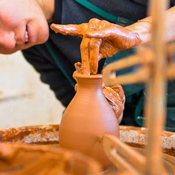

Poterie de
Saint-Jean-de-FosCéramique artisanale de la vallée de l'Hérault


⟹ Savoir-Faire & Artisanat ⟸
À l'entrée des gorges de l'Hérault, à proximité immédiate du Pont du Diable et de Saint-Guilhem-le-Désert, Saint-Jean-de-Fos a construit une part essentielle de son identité autour de l'argile. Pendant plus de six siècles, la poterie y a été à la fois une activité économique, un savoir-faire familial et une manière d'organiser le paysage et la vie quotidienne. L'abondance de terres argileuses, l'eau nécessaire à leur préparation et les ressources végétales autrefois utilisées comme combustible expliquent l'installation durable des ateliers.
Les potiers allaient chercher la matière dans des zones d'extraction traditionnellement désignées comme des « terriers ». L'argile brute devait ensuite être triée, débarrassée de ses impuretés, humidifiée et longuement préparée avant de pouvoir être tournée ou modelée. Cette chaîne de travail liait étroitement le métier à son environnement : carrières d'argile, eau, espaces de séchage, réserves de bois et fours formaient un véritable paysage artisanal autour du village.

La tradition est attestée à la fin du Moyen Âge et au début de l'époque moderne. Des toponymes liés au travail de la terre apparaissent dès le XVe siècle et les archives permettent d'identifier des potiers au XVIe siècle. Raimond Sinadié est notamment cité en 1526 ; à la fin du siècle, la présence de nombreux artisans montre que la poterie n'est déjà plus une activité marginale mais l'une des spécialités du bourg. Les potiers sont souvent désignés par le terme occitan d'« orjouliers », apparenté à l'« orjol », la cruche ou le récipient de terre.
La production répond d'abord aux besoins ordinaires d'une société rurale méditerranéenne. On fabrique des cruches, pots, jarres, écuelles, plats et récipients destinés à l'eau, au vin, à l'huile, à la conservation et à la cuisine. Mais les ateliers de Saint-Jean-de-Fos se distinguent aussi par une importante production pour le bâtiment : tuiles, carreaux, canalisations, gouttières, descentes d'eau, chéneaux et éléments de faîtage. Une partie de ce patrimoine demeure visible sur les maisons du village, où les pièces de terre cuite vernissée sont devenues de véritables marqueurs architecturaux.
La fameuse terre vernissée associe une terre cuite à une glaçure qui rend la surface moins poreuse et lui apporte sa couleur. Les tons verts, particulièrement associés à Saint-Jean-de-Fos, sont devenus emblématiques du village, même si la production traditionnelle ne se limitait pas à une seule teinte. L'engobage et la glaçure permettaient de transformer des objets très fonctionnels en pièces reconnaissables, parfois décorées, tout en améliorant leur résistance à l'usage.
Le métier reposait sur une succession de gestes précis. Après la préparation de la terre venait le façonnage, souvent au tour pour les formes cylindriques. Les pièces étaient ensuite mises à sécher lentement afin d'éviter fissures et déformations. L'application des décors, engobes ou glaçures précédait la cuisson. Le four à bois constituait le cœur spectaculaire et risqué de l'atelier : son chargement, la montée progressive en température, la surveillance du feu puis le refroidissement exigeaient une grande expérience. Une cuisson ratée pouvait compromettre plusieurs jours ou semaines de travail.
Cette organisation explique le caractère longtemps familial des ateliers. Les connaissances se transmettaient par l'apprentissage et par l'observation quotidienne : choix de la terre, consistance idéale, vitesse du tour, temps de séchage, dosage des glaçures, placement des pièces dans le four et conduite du feu. Autour du maître potier intervenaient souvent plusieurs membres de la famille, ainsi que des ouvriers ou apprentis. La poterie structurait donc une part importante de la société locale.
Du XVIIe au XIXe siècle, la production accompagne l'essor démographique et agricole de la vallée de l'Hérault. Les objets de Saint-Jean-de-Fos sont diffusés au-delà du village par les marchés et les réseaux commerciaux régionaux. Au XIXe siècle, l'activité atteint son apogée : de nombreux ateliers fonctionnent simultanément et la poterie constitue l'une des principales ressources du bourg. Les installations comprennent alors tourneries, réserves de terre, bassins de préparation et de décantation, espaces de séchage et grands fours.
L'ancien atelier d'Élie Sabadel, aujourd'hui conservé au sein d'Argileum, est un témoignage exceptionnel de cet âge artisanal. Préservé avec son organisation et ses équipements, il permet de comprendre concrètement la fabrication : tournerie, four à bois, bassins de décantation et espaces de travail racontent la transformation de l'argile depuis la matière brute jusqu'à l'objet cuit. Ce patrimoine donne une dimension matérielle à une histoire qui, autrement, ne subsisterait que dans les archives et les objets anciens.
Comme beaucoup de centres potiers français, Saint-Jean-de-Fos est profondément touché aux XIXe et XXe siècles par l'industrialisation. La vaisselle produite en série, le métal, le verre puis de nouveaux matériaux remplacent progressivement de nombreux récipients de terre. Les éléments de construction eux-mêmes sont concurrencés par des produits industriels standardisés. Le nombre d'ateliers diminue et la poterie cesse peu à peu d'être l'activité dominante du village.
La tradition ne disparaît pourtant pas. Des artisans maintiennent les gestes anciens tandis qu'une nouvelle génération de céramistes fait évoluer les formes et les usages. La poterie utilitaire côtoie désormais le grès, la sculpture, les pièces décoratives, la création contemporaine et diverses techniques de cuisson. Cette évolution a permis au village de ne pas figer son patrimoine : le savoir-faire historique devient le point de départ d'une création renouvelée.
Depuis 1985, le marché des potiers joue un rôle majeur dans cette renaissance. Il réunit chaque année autour d'une cinquantaine de céramistes et présente un large éventail de pratiques — terre vernissée, grès, porcelaine, raku, bijoux et pièces utilitaires ou décoratives. Démonstrations, expositions et ateliers permettent de transmettre au public les gestes de la céramique et de replacer Saint-Jean-de-Fos dans un réseau beaucoup plus vaste de potiers français et européens.
La création d'Argileum, la Maison de la Poterie, dans l'ancien atelier du XIXe siècle, a renforcé cette transmission. Le centre d'interprétation retrace plus de 600 ans d'histoire potière, explique la préparation de la terre, le tournage, le séchage, la décoration et la cuisson, et conserve les traces concrètes de la vie des anciens ateliers. Démonstrations et initiations permettent également de relier les techniques historiques à la pratique actuelle.
Aujourd'hui encore, des artisans sont installés dans Saint-Jean-de-Fos. Le village offre ainsi une situation rare : l'histoire peut être lue simultanément dans les archives, dans l'ancien atelier conservé, sur les façades ornées de céramiques architecturales et dans les boutiques où la terre continue d'être façonnée. Plus qu'un simple souvenir économique, la poterie est devenue un patrimoine vivant qui relie le paysage, l'architecture, les familles de potiers et la création contemporaine.
La spécialité de Saint-Jean-de-Fos est la poterie vernissée : une pièce façonnée en argile rouge locale est recouverte d'engobe, une fine couche d'argile blanche liquide, puis émaillée. Cette technique donne aux poteries du village leurs teintes traditionnelles caractéristiques.
Le miel, le paille et le vert de cuivre forment la palette historique des potiers, rejoints plus tardivement par le bleu de cobalt.
— Association des Potiers de Saint-Jean-de-FosLe lien entre l'artisanat et le territoire se lit encore dans les noms de lieux du village : « Les Terriers » désigne une ancienne carrière d'argile, tandis que « Four des Oules », « Teulieyres » ou le « Chemin des Potiers » rappellent l'omniprésence de cette activité dans la vie locale, de la préparation de la terre à la cuisson au four à bois.
Pont du Diable ouvrage médiéval bâti entre 1028 et 1031, inscrit au titre des Chemins de Saint-Jacques-de-Compostelle en France, patrimoine mondial de l'UNESCO.
Grottes de Clamouse monde souterrain spectaculaire situé sur la route de Saint-Guilhem-le-Désert, à quelques minutes du village.
Saint-Guilhem-le-Désert l'un des Plus Beaux Villages de France, avec son abbaye de Gellone classée à l'UNESCO.
Gorges de l'Hérault à parcourir en canoë ou à pied, entre falaises et plage naturelle juste après le Pont du Diable.